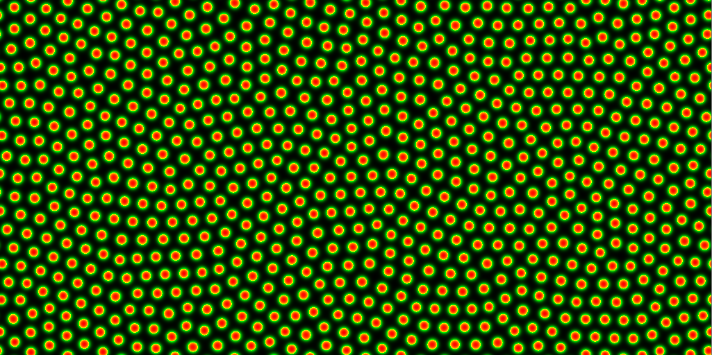
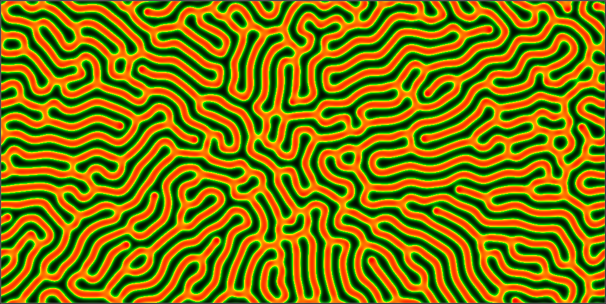
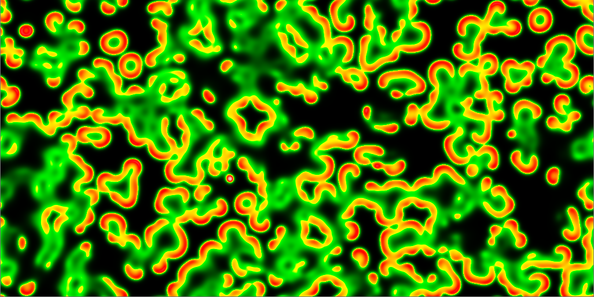
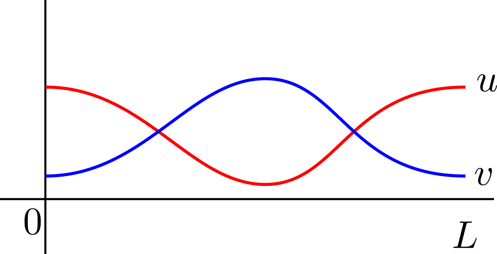

1. French flag threshold
Consider an empty one-dimensional domain, \([0,L]\), such that \(x=0\) is insulated. At time \(t=0\) the boundary \(x=L\) is turned into a source of morphogen, \(M\), of constant strength \(S\). The morphogen is able to diffuse away from the boundary at a rate \(D\) and decays at a rate proportional to itself with constant of proportionality \(r\).
Justify the following model of this set-up,
\[\frac{\partial M}{\partial t}=D\frac{\partial^2 M}{\partial x^2}-rM,\quad 0<x<L, \tag{1}\]
\[M(x,0)=0, \tag{2}\]
\[\frac{\partial M(0,t)}{\partial x}=0,\quad M(L,t)=S. \tag{3}\]
Determine the steady state distribution, \(M(x,t)=M_s(x)\).
Suppose the domain is filled with cells that are able to sense the concentration of \(M\) and that the cells can differentiate into two different forms based on the concentration of \(M\) that they sense. Namely, if \(M_s<S/2\) then cells differentiate into form 1, whilst if \(M_s>S/2\) then cells differentiate into form 2. Define \(x_s\in[0,L]\) to be the point which delineates the regions between cells of form 1 and cells of form 2.
Draw two sketches of \(M_s(x)\) to show that \(x_s\) may, or may not exist.
Show that
\[x_s=\sqrt{\frac{D}{r}}\cosh^{-1}\left(\frac{1}{2}\cosh\left(\sqrt{\frac{r}{D}}L\right)\right). \tag{4}\]
Using equation (4) and the intuition from question 3, under what parameter conditions does \(x_s\) exist? Hint: the inverse of \(\cosh\) does not output real values for all input values.
By sketching \(M_s\) for multiple values of \(L\), suggest what happens to \(x_s\) as \(L\) gets larger.
Follow the following steps to derive a first-order approximation of \(x_s\) in \(L\), for large \(L\).
Noting that:
\(\cosh(x)=\frac{1}{2}\left(\exp(x)+\exp(-x)\right)\);
\(\cosh^{-1}(x)=\ln\left(x+\sqrt{x^2-1}\right).\)
what is \(\cosh\left(L\sqrt{r/D}\right)\) for large \(L\)?
Using the answer from part a show that, for large \(L\),
\[x_s\approx\sqrt{\frac{D}{r}}\ln\left(\frac{1}{2}\exp\left({\sqrt{\frac{r}{D}}L}\right)\right). \tag{5}\]
Rearrange equation (5) to generate a form
\[x_s\approx L-C, \tag{6}\]
where \(C\) is a positive constant that should be defined.
Does solution (6) confirm the intuition gained from the question 6?
What does equation (6) mean for the cell populations on a large domain?
(Optional) Using computer software you are comfortable with plot equations (4) and (6) with values \(D=10\) and \(r=1\) for \(0\leq L \leq 10\). Be careful of where the solution \(x_s\) becomes imaginary. How good is the approximation? Estimate the length, \(L\), at which \(M_s\) is always above \(S/2\).
2. Patterning
Alongside the Schnakenberg system, which we have seen throughout the course, the Gierer-Meinhardt kinetics1 are a well-known system of morphogen kinetics that produce Turing patterns.
The Gierer-Meinhardt reaction-diffusion system on an infinite one-dimensional domain is
\[\begin{align} \frac{\partial A}{\partial t}=&f(A,H)+ D_A \frac{\partial^2 A}{\partial x^2},\tag{7}\\ \frac{\partial H}{\partial t}=&g(A,H)+ D_H \frac{\partial^2 H}{\partial x^2}, \tag{8} \end{align}\]
where
\[\begin{align} f(A,H)=&\frac{\rho_1 A^2}{\left(1+KA^2\right)H}-\mu_1 A,\tag{9}\\ g(A,H)=&\rho_2 A^2-\mu_2 H. \tag{10} \end{align}\]
where \(A\) and \(H\) are the morphogen populations and \(K, \rho_1, \rho_2, \mu_1, \mu_2, D_A\) and \(D_H\) are positive constants. We assume that \(A\) and \(H\) remain finite over the domain and appropriate initial conditions are provided. Initially, let us fix \(\boldsymbol{K=0}\).
As on sheet 2 this question is a good chance to practise deriving the Turing inequalities. However, if you are confident that you know what you are doing2 then you can simply write down the required answers.
(0,0) is a homogeneous steady state of equations (7) and (8). What is the positive steady state, \((A_s,H_s)\)?
Write down two inequalities that the positive steady state must satisfy in order to be stable, in the absence of diffusion.
Derive conditions under which the non-zero homogeneous steady state is stable in the absence of diffusion, but unstable when diffusion is included3 (i.e. derive the Turing conditions).
Now assume that \(\boldsymbol{K\neq 0}\).
Show that the positive homogeneous steady state must satisfy
\[\frac{\mu_1\rho_2 A_s}{\rho_1\mu_2}(1+KA_s^2)=1. \tag{11}\]
Sketch the phase plane with nullclines \(f=0\) and \(g=0\) and demonstrate that there is still only one positive homogeneous steady state. Be sure to draw the two nullcline arrangements that can occur. Namely, the quadratic defined by \(g=0\) can cut \(f=0\) either before or after the maximum of \(f=0\). Do not forget to add the directional arrows specifying the signs of \(A_t\) and \(H_t\).
What Jacobian sign structures are necessary for a Turing instability to take place?
Near the non-zero steady state the derivatives of \((A_t,H_t)\) change sign. Use the nullcline plot to extract the signs of \(f_A, f_H, g_A\) and \(g_H\) and, thus, show that a diffusion-driven instability can occur in only one of the two situations. Hint: in an \((A,H)\) phase plane the signs of \(f_A\) and \(g_A\) are defined by changes in signs of \((A_t,H_t)\) along a horizontal path through \((A_s,H_s)\), whereas the signs of \(f_H\) and \(g_H\) are defined by changes in the signs of \((A_t,H_t)\) along a vertical path through \((A_s,H_s)\).
3. Simulating Turing patterns
No Matlab this time. Simulating partial differential equations is not a simple task. However, there are websites out there that have done the heavy lifting for you.
The Gray-Scott reaction-diffusion model is
\[\begin{align} &\frac{\partial u}{\partial t}=D_u\nabla^2u -uv^2+F(1-u),\tag{12}\\ &\frac{\partial v}{\partial t}=D_v\nabla^2v +uv^2-(F+k)v, \tag{13} \end{align}\]
where appropriate boundary and initial conditions are assumed to be given and \(D_u, D_v, F\) and \(k\) are constants. \(F\) is known as the feed rate as it causes more \(u\) to be added to the system. \(k\) is the death rate as it controls the rate at which \(v\) is removed from the system.
You can play around with the feed rate, death rate and initial conditions through this online applet. What patterns can you create? As a base level try and find spots, labyrinthine patterns and constantly evolving patterns, like those shown in Figure 1. For those feeling more adventurous try and find other patterns contained within these equations.

(a)

(b)

(c)
Possible patterns in the Gray-Scott equations (12) and (13).
Exam Revision
4. Properties of Turing patterns
Consider a two-species reaction-diffusion system with Neumann boundary conditions on a domain \(B\), which has boundary \(\partial B\),
\[\begin{align} &\frac{\partial u}{\partial t}=D_u\nabla^2u + f(u,v),\tag{14}\\ &\frac{\partial v}{\partial t}=D_v\nabla^2v + g(u,v),\tag{15}\\ &\frac{\partial u}{\partial n}=\frac{\partial v}{\partial n}=0 \textrm{ on } \partial B. \tag{16} \end{align}\]
and random initial conditions. Further, assume that the kinetics and diffusion parameters are chosen such that the populations \((u,v)\) undergo Turing patterning.
Specify the Jacobian structures behind “cross” and “pure” kinetics.
Explain why the resulting morphogen patterns of \((u,v)\) are in phase when pure kinetics are used and out of phase when cross kinetics are used. Note: in phase means that the peaks and troughs of \(u\) and \(v\) occur at the same positions, whereas out of phase means that the peaks of \(u\) correspond to the troughs of \(v\) and vice versa. Hint: consider the signs of \(\epsilon_1\) and \(\epsilon_2\). Under what conditions are they the same/different? What does this mean?
Explain why spatial oscillations can never occur at a Turing bifurcation point. Namely, show that the unstable eigenvalue \(\lambda\) must always be real at the onset of patterning.
Why must \(D_u\neq D_v\)? (Hint: assume they are equal and derive a contradiction).
5. Creating the model
For each of the following images in Figure 2 write down a set of reaction-diffusion equations that could provide the images as a steady state solution. Do not forget to provide boundary conditions. For initial conditions assume that there is a small spatially random amount of morphogen throughout the domain.
(a)
(b)

(c)
Three steady state morphogen profiles.